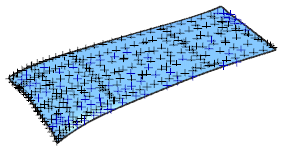
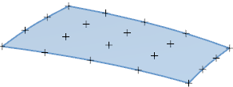
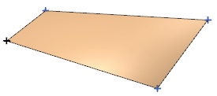
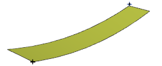

由点创建的特征
如果构造几何体中只包含点，可以使用以下三种选项的任何一种来创建该特征。
-
拟合曲面 — 如果您有一组分散的点

-
通过点 — 如果曲面想要通过某些点，并且这些点组成矩形阵列

-
从极点 — 如果点用来定义曲面控制多边形极点，并组成矩形阵列

-
四点曲面 — 如果您有四个点，并向创建一个将被进一步塑造的自由曲面。不包含在这些课程中。

-
整体变形 — 如果您有两个形成矩形曲面的对角点。不包含在这些课程中。
